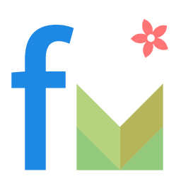

查理斯的博客
还没想好
http://charlesmtian.xyz
add
add

Charles
点击三点图标以打开菜单
关于我们
访问 Github 团队帐号
联系我们
Logo 由 @翟宅宅Jack 制作
more_vert
show menu
さようなら ≠ 永别
终究还是逃不过命运，这也是绝大多数人的出路，只有能够上到一所好的大学才能继续安心地做自己喜欢做的事情啊。
Charles
八月 19, 2015
More
arrow_forward